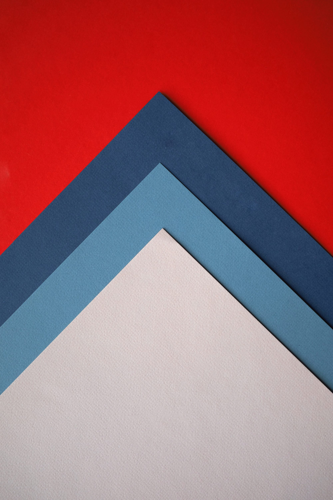

I had promised more frequent updates on my FreeCodeCamp adventure and here it is the first objective reached: Responsive Web Design Certification. As you can see from the certificate I completed the first part of the course yesterday. That is roughly 300 hours of coursework but it feels like 3000. At least. Without much ado, let's look into what is easy and what is not for me so far.
Responsive Web Design - The easy parts
The actual responsive concepts, @media queries and the viewport measures (pt, px, %, vh etc.) clicked very quickly. As previously said, I had started this cours in February of this year but had to stop for a few months. Well, those concepts already clicked in February and stood with me throughout the following months. Thus, easy.
Another thing I found very easy was to get into the Grid and Flex concepts. I implemented all the courses' projects with the help of Bootstrap4 and organizing their layouts was the most entertaining part of it all. Already on the second project I could imagine how many rows and columns I was going to need and in what order by looking at the template given by FreeCodeCamp. Easy peasy. I had to rewrite from scratch the layout I believe 3 times because I found out I couldn't align the elements as good as I wanted with what I had so far wrote and it never took me more than 1 hours to reach a point where the alignment was satisfying. I am absolutely no master of the Grid system but basic layouts are on my level.
It was also a lot of fun discovering HTML5 tags and how to implement them. CSS3 features were mostly new to me but box-shadow, linear-gradient, overflow and so on were extremely fastly understood and tried, albeit not always they made it to the final version of the project. I didn't keep track on paper of the various tags and features I was reading about and I believe this to be a mistake; one of these days I'm going to write an helper for myself listing all the most useful HTML tags and CSS functions to fix them in my brain.
Responsive Web Design - The hard parts
You may check the projects' state on this Github repo. You'll instantly notice they look very crude. Basic. Offensively simple. They work, they pass all tests and they are readable and browseable enough to not generate any complain on that matter.
But man, actually designing something that can be modern and/or pretty is hard for me. Any time I tried to play with backgrounds, shadows, customizing Bootstrap's elements and so on I had to scratch everything and come back to the simpler version: it just looked worse, much less readable. I have spent the last 2 weeks of the course browsing CSS tricks, solutions to snappy menus, shadows that would actually make the text more modern and not some fuzzy border of it, responsive backgrounds that would keep the above elements readable, gradients and what not but to no much avail.

I see those fancy web awarded websites I do have a clue how to make them, what technology is behind it and how to implement some jQuery magic to have similar functionalities. But for the life of me I don't know how to make it look like those. I'm sure I would remake any of the websites on awwwards in black & white, with menus that have a simple hovering colour, with askew background images, with fonts-that-are-readable-but-never-look-like-what-you-want, with videos and animated gifs static and none of the flashing or rolling on effects. I would make the websites work, but I would make them damn ugly.
With the very last project of the course I didn't even try to embellish it. I made it work, I made it pass the tests and fuck it, I published it. I may return to it in the future, as with all the other projects, but I am not counting on it.
The main issue here is that looking at a website I have no idea how to translate what I see into CSS and actual colours. I can make the shape of the elements, but it is like my brain can't translate what the eyes are transmitting beyond it. I'm blind for good web design.
This is actually very enraging. Most of the people who know me personally compliment me on my sense of style, on my aesthetic taste and ask for advice to me on what is better looking. Even women, and even women who are actually good at dressing. I do have some sense of beauty thus, I can imagine a dress or a furniture in any combination without having to see it with the eyes. Give me an empty room and I'll tell you what to buy to fill it and make every piece go along well with the others; show me a jacket and I'll tell you what to wear with it (and more often, what NOT to). That is effortless for me.
But if you give me an icon, or a menu, or a navbar, or a footer, or a bulleted list or any element of a website, or even a working prototype of a website, and I will stare back at you without any idea on how to proceed from there. Zero. Nada.
If the objective of web design is to make usable websites, that certification attests it. If it is to make beautiful websites, look elsewhere. I may reach a moment when my projects look acceptably well or I may not. This is by far the hardest issue I am facing in web development, and one of the hardest in general since when I first started studying programming.
Tweet Go Top
comments powered by Disqus